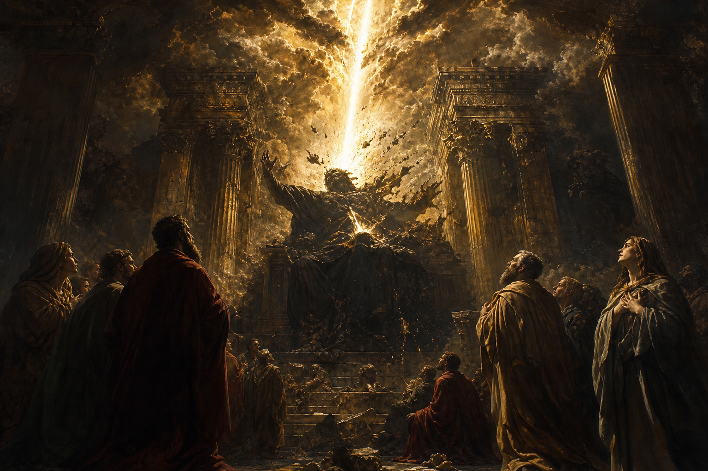

New Testament · Book 14 of 27
2 Thessalonians
Paul corrects confusion about the day of the Lord and calls a church, unsettled by false reports, back to steady faith and honest work.
Shortly after his first letter, Paul writes again to correct a rumor, possibly a forged letter, claiming the day of the Lord has already come, and to rebuke believers who have stopped working while waiting for it.
Let no man deceive you by any means: for that day shall not come, except there come a falling away first, and that man of sin be revealed.
What happens in 2 Thessalonians
Paul opens by encouraging the Thessalonians in their endurance of persecution, assuring them that God's justice will eventually repay their afflicters and grant them rest. He then addresses the letter's central concern directly: someone has told them, perhaps through a forged letter claiming to be from Paul, that the day of the Lord has already arrived. Paul insists this cannot be true, because that day will not come until a great rebellion occurs and a man of lawlessness is revealed, exalting himself above every object of worship, a figure currently restrained but destined to be destroyed by the brightness of Christ's coming. He thanks God for the Thessalonians' election and urges them to stand firm in the traditions he taught them, then asks for their prayers for his own ministry and for protection from wicked men. The letter closes with a firm command that those unwilling to work should not eat, rebuking believers who have abandoned their responsibilities under the guise of spiritual excitement, and urging the church to withdraw fellowship from those who refuse correction while still treating them as family, not enemies.
Why it matters
2 Thessalonians provides one of the New Testament's most detailed descriptions of end-times deception and the figure of the man of lawlessness, giving later generations a framework for discerning true teaching about Christ's return. Its blunt call to steady, productive living while waiting for that day has corrected every generation tempted to let expectation replace responsibility.